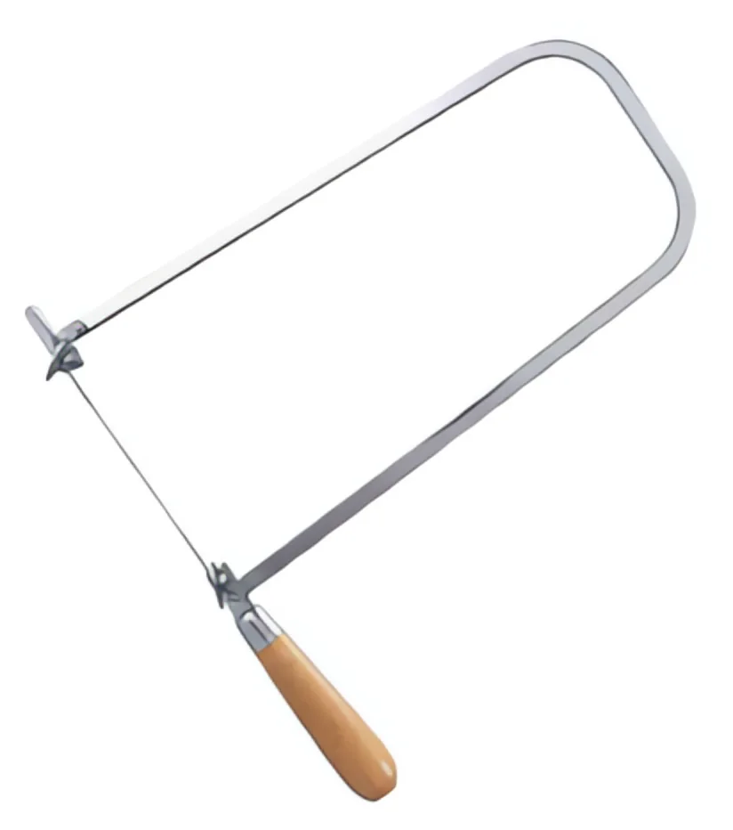

GROZ · Hacksaw Frames & Blades
Fret Saw Frames
CAT NR FSF/9 · ORD NR 30223
| CAT NR (catalogue number) | FSF/9 |
|---|---|
| ORD NR (order number) | 30223 |
| Box quantity | 60 |
| Depth of bow (h) (inch) | 11-3/8 |
| Depth of bow (h) (mm) | 285 |
| Details | Blue Powder Coated Frame |
| Height (H) (inch) | 12 |
| Height (H) (mm) | 300 |
| Overall length (L) (inch) | 12 |
| Overall length (L) (mm) | 300 |
Ask for a quote The catalogue PDF, page 81
“Ask for a quote” opens this product in the catalogue: add it to your quote and send it. Buyers from Africa, the Gulf and worldwide are welcome; prices in USD, EUR or INR.
From the GROZ Workshop Tools CB-05 catalogue. Not yet verified: these details were read from the printed catalogue automatically; check the catalogue page before ordering.